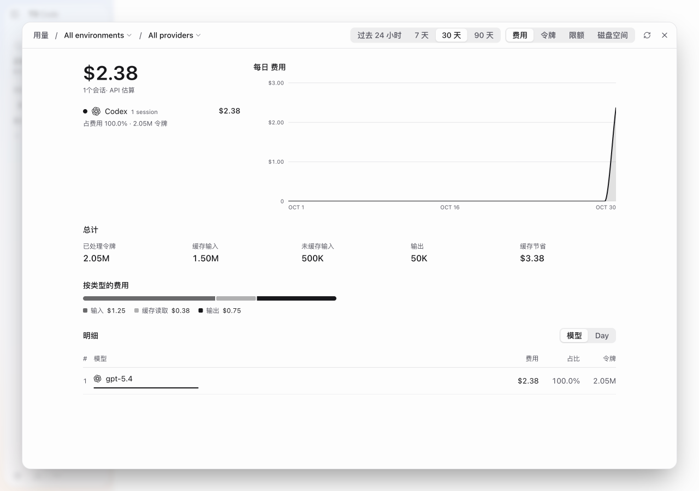
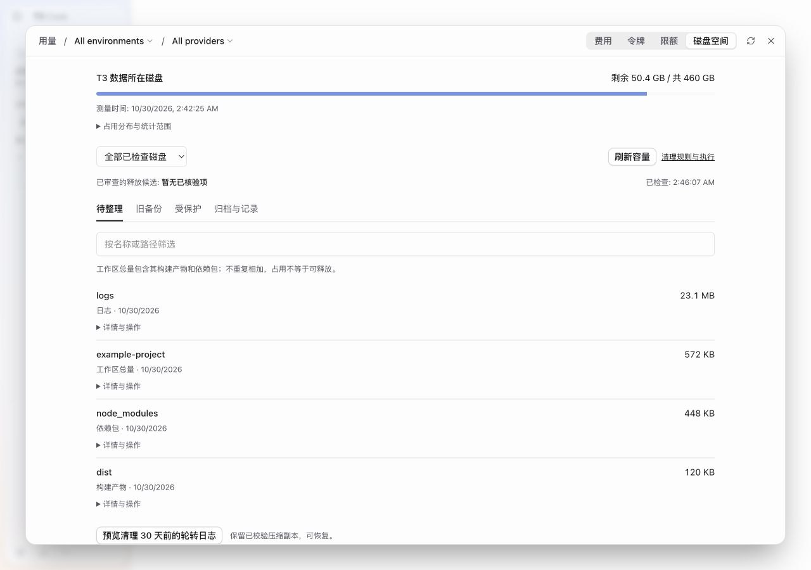
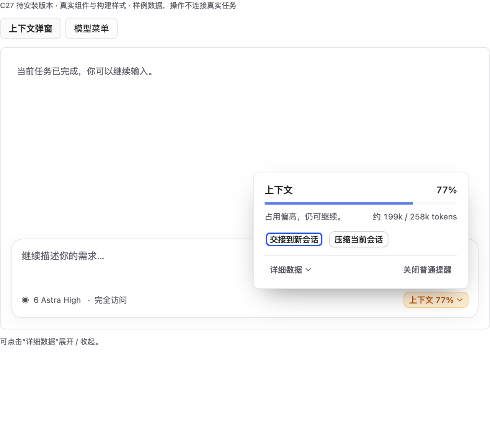
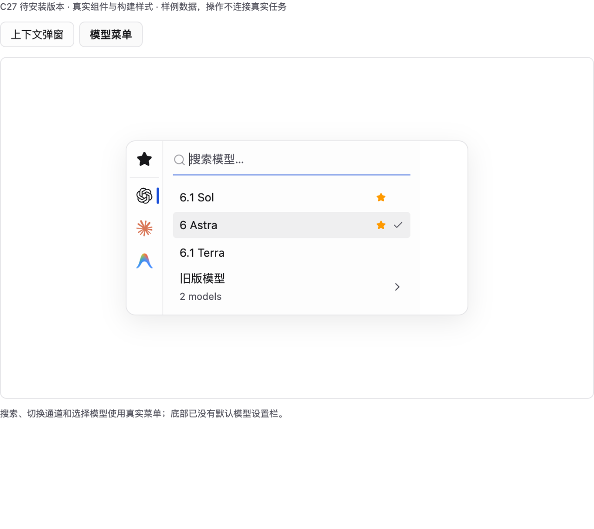
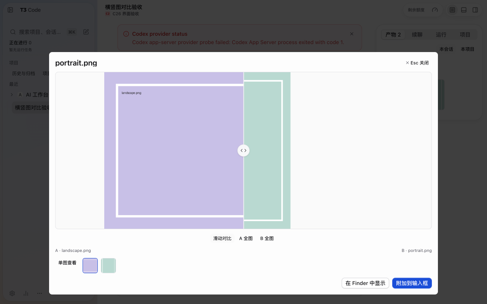
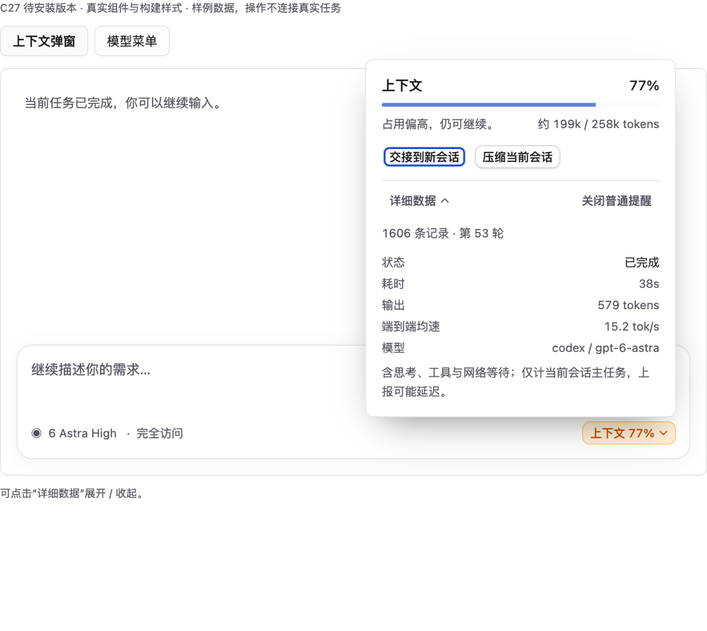
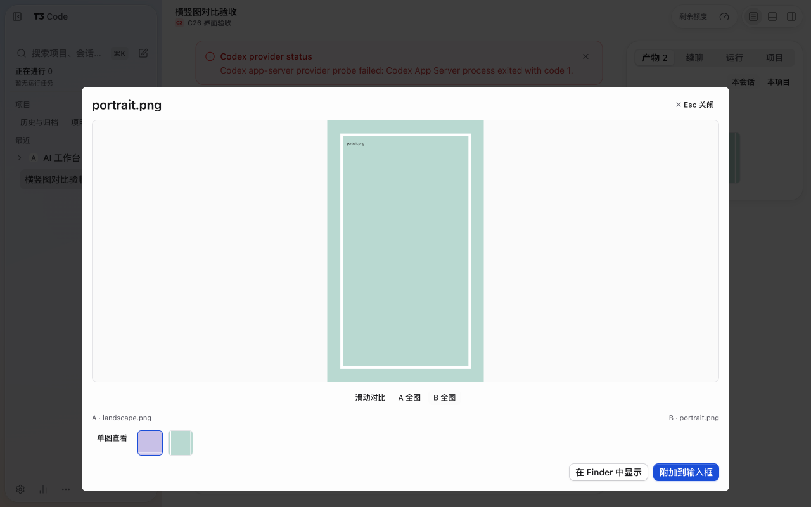

C28 安装包实拍，合成用量。主指标为金额。 / C28 packaged runtime, synthetic usage; cost is the primary metric.
C28 安装包实拍，合成目录。容量不等于可释放。 / C28 runtime, fixture directories; occupancy is not reclaimable space.
同源码 C27 组件预览，C28 保留。外围输入框和数据是样例。 / C27 component retained in C28; surrounding composer and values are preview fixtures.
同源码组件预览，底部默认模型栏已移除。 / Component preview with the default-model footer removed; model availability is a fixture.
C26 隔离安装包实拍，C28 保留。背景提示来自无账号测试环境。 / C26 isolated package retained in C28; the warning comes from the credential-free fixture.
同源码组件展开状态，非整个应用实拍。 / Expanded state of the same source component, not a complete app screenshot.
C26 隔离安装包的 B 整图模式，C28 保留。 / C26 whole-image B mode hides the other image; retained in C28.